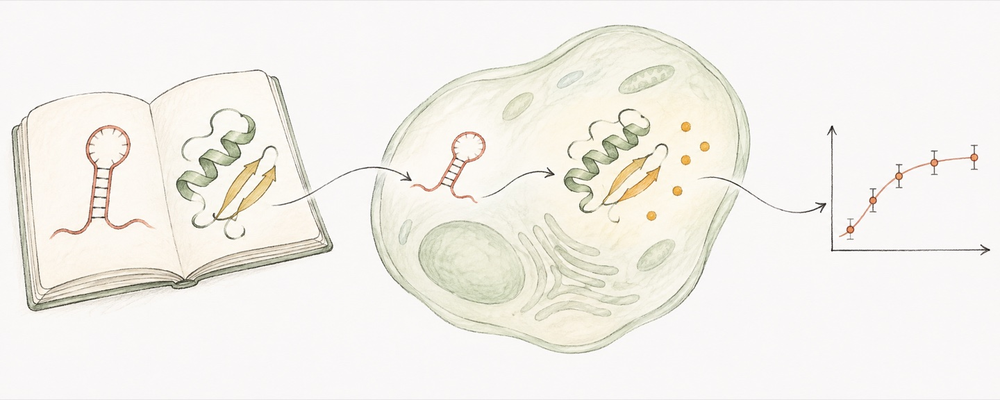

生物系统什么时候该起作用

我读博时做的是环状 RNA 的可编程翻译控制，以及配套的递送载体设计。做着做着，一个更大的问题越来越清楚：怎么让生物大分子系统读懂细胞眼下的状态，还能听得进控制？把功能写进序列只是开头，难的是让它在对的细胞、对的位置、对的时间点上起作用。
所以我特别在意 RNA、蛋白质和递送这三者怎么配合。纸面上设计好的功能，要在细胞里跑出来，中间得过好几道关：能不能送到目标位置，进去之后细胞用不用得上，最后有没有产生想要的行为。这是三个不同的问题。顺着这条链看下来，才分得清一个实验数据说明的是哪一环。
时间维度会改变整个问题
输出持续多久，不是个细枝末节，它会直接改写设计问题。有些时候我们需要一次短暂的脉冲，有些时候则需要持续稳住一段时间。我想弄明白，细胞状态一变，这些响应会跟着怎么变；系统又该怎么做到需要时启动、差不多了就收手。
怎么停下来、怎么清除，本身也是控制问题。系统能不能自己代谢掉？还是得留一个能人为叫停的开关？停下来之后，会不会留下后续影响？如果只盯着刚启动那一刻亮不亮，就漏掉了功能随时间演变的关键一半。
把测量指标对应回真实功能
我习惯把每项实验数据能回答什么问题对上号。在组织里看到了信号，不等于知道单个细胞里发生了什么；测到了蛋白表达，也不等于细胞产生了预期的功能。分布、表达和功能是三件事，不能混在一起算。
更进一步，细胞状态和周围微环境一变，这些对应关系还成不成立？摸清楚一个设计在什么条件下管用、一换什么条件就失效，才能把它的能力边界说准。
博士后阶段，我会往免疫调控方向走得更深，多关注疫苗、肿瘤疫苗和 CAR-T 相关的临床研究。在我看来，这是同一组问题的延续：怎么让生物系统在该发力的地方做出恰当反应，撑住合适的时长，又在合适的时候稳稳收住。
我最终想让分子层面的设计和真实的临床需求接上头。一个系统值得接着往下做，要么是因为它能派上用场，要么是因为它帮我们看清了某种功能为什么只在特定条件下出现。